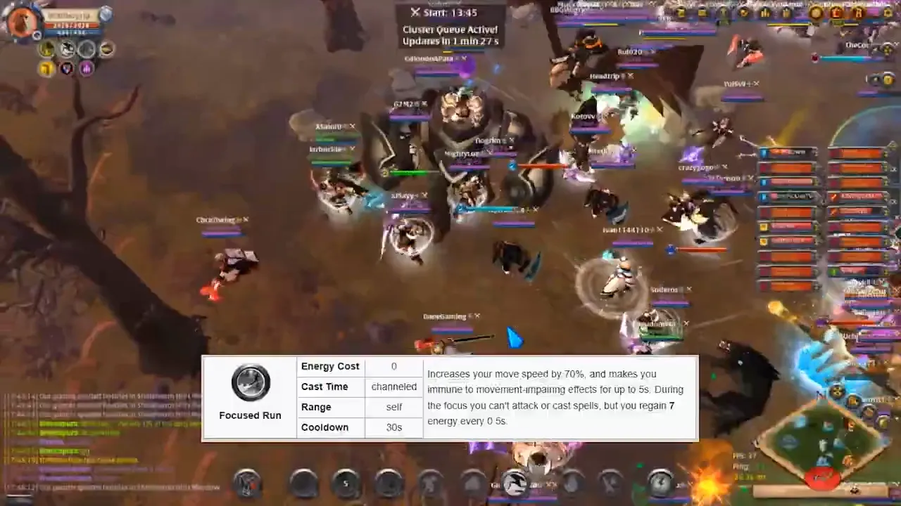
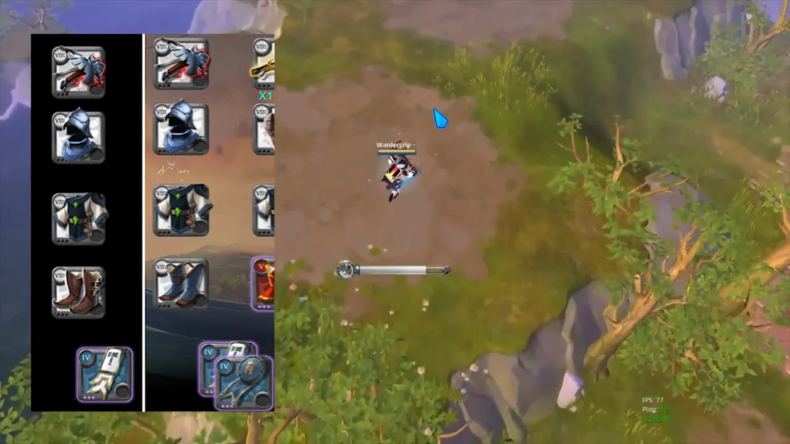
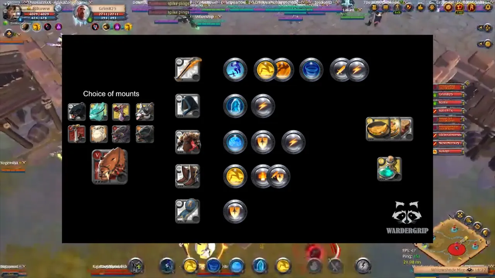
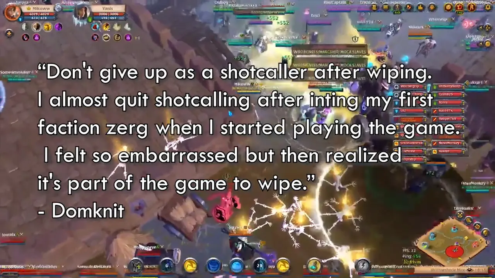

Guides for Albion Online
Guides I made to contribute to the Albion Online community
About
After playing Albion Online for a long while, I wanted to contribute to the community and help newer players get into end game content. As I enjoyed ZvZ (shorthand for zerg versus zerg, the large scale battles in Albion Online) a lot and since it is one of the unique selling points to play the game, I made some guides about it.
I started with a guide on the ZvZ basics detailing all you would want or need to know to participate. I followed up with a more ambitious and larger guide, which was the one I wanted to make, laying out what you need to know and do to shotcall ZvZs. The shotcaller is the person leading the army, the person responsible for making the high level combat decisions. Practically, this means you are one of the few people in the Discord voice chat that is talking while 40 or so (sometimes hundreds) of people are following your instructions. It's an incredibly difficult but fulfilling role that I wanted to make more accessible. As I wasn't known in the Albion Community and also did not have the street cred to back up my insights and knowledge, I let my drafts be checked by many of those that do have the street cred.
After some time I noticed that people did not know about the guide or perhaps did not like reading guides. Because of this, I made videos that were basically me reading the guide out loud while showing relevant graphics on the screen. I enjoyed the process of gathering relevant footage, screenshots and editting it all together. It's quite amateuristic but it accomplishes it's purpose, transfering knowledge.
Even years after leaving the Albion Online community, I still receive messages of people thanking me for kick starting their journey into the content or even the path of shotcaller. It's nice knowing it's still being used and enjoyed.
Screenshots



